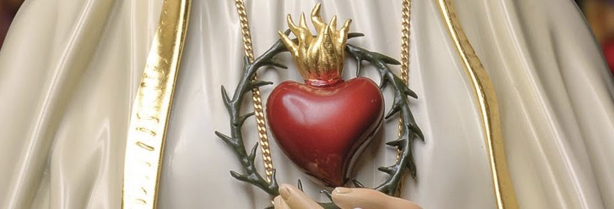
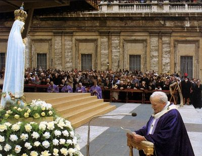
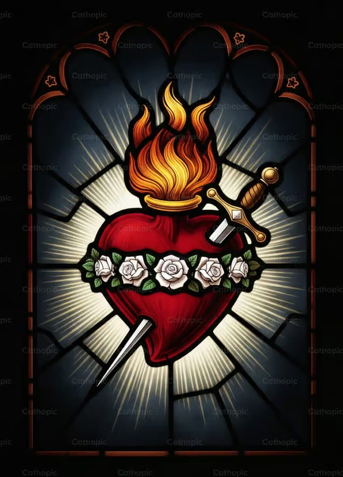

Historia de la Devoción
Aunque el culto al Corazón de María tiene raíces patrísticas en figuras como San Bernardo de Claraval o Santa Gertrudis la Grande, fue el sacerdote normando Juan Eudes (1601–1680) quien articuló por primera vez esta devoción de manera sistemática y obtuvo la aprobación eclesiástica para celebrarla litúrgicamente. San Juan Eudes, fundador de los Eudistas y de las Hermanas de la Caridad de la Refugio, compuso el primer oficio litúrgico del Corazón de María y promovió su fiesta en numerosas diócesis francesas, celebrando la primera misa oficial en honor al Corazón de María el 8 de febrero de 1648 en la diócesis de Autun.
La reflexión teológica de San Juan Eudes partía de una intuición profunda: el corazón de María y el corazón de Jesús son, en sentido espiritual, un solo corazón, pues la madre comparte en plenitud los sentimientos, la voluntad y el amor de su Hijo. Esta perspectiva, desarrollada en su obra capital El Corazón Admirable de la Santísima Madre de Dios, estableció el fundamento doctrinal sobre el que las generaciones posteriores edificarían la devoción.
Durante los siglos XVIII y XIX, la devoción fue creciendo paulatinamente. San Luis María Grignion de Montfort la integró en su espiritualidad de consagración total a María. Sin embargo, sería el siglo XX, con el acontecimiento de Fátima, el que le daría una dimensión universal y un contenido profético de alcance histórico.
Fátima y el Corazón Inmaculado

El 13 de julio de 1917, en la Cova da Iría de Fátima, Portugal, la Virgen María reveló a los tres pastorcillos Lucía, Francisco e Jacinta el contenido del segundo secreto. En él, Nuestra Señora anunciaba que si el mundo no se convertía, vendría una guerra aún más terrible que la que entonces asolaba Europa, y que para impedirla pedía dos cosas concretas: la consagración de Rusia a su Inmaculado Corazón y la comunión reparadora de los primeros sábados de mes.
La Virgen prometió solemnemente que si sus peticiones eran atendidas, Rusia se convertiría y habría un período de paz; de lo contrario, Rusia extendería sus errores por el mundo, causando guerras y persecuciones de la Iglesia. Esta petición, con su contenido geopolítico explícito, convirtió el Inmaculado Corazón de María en el centro de una de las profecías marianas más comentadas y debatidas del siglo XX.
La devoción de los primeros sábados, complementaria a la del primer viernes dedicado al Sagrado Corazón de Jesús, consiste en recibir la comunión, rezar el rosario, acompañar a María durante quince minutos meditando los misterios del rosario y confesarse sacramentalmente en los primeros cinco sábados de mes, con la intención de reparar las ofensas cometidas contra el Inmaculado Corazón de María.
La Consagración del Mundo

El 31 de octubre de 1942, en plena Segunda Guerra Mundial, el papa Pío XII consagró el mundo al Inmaculado Corazón de María mediante una radiodifusión mundial en lengua portuguesa, dirigida especialmente a los pueblos de Portugal, España y América Latina. Aunque la hermana Lucía, ya religiosa carmelita, señaló que esa consagración no respondía plenamente al pedido de Nuestra Señora —que requería la participación explícita de todos los obispos del mundo y la mención específica de Rusia—, el acto pontificio dio un impulso decisivo a la devoción. En 1944, Pío XII extendió la fiesta del Inmaculado Corazón de María a la Iglesia universal, fijándola el 22 de agosto.
Décadas después, el 25 de marzo de 1984, el papa Juan Pablo II realizó en la Plaza de San Pedro la consagración del mundo al Inmaculado Corazón de María en comunión con todos los obispos del mundo, quienes simultáneamente renovaban el mismo acto en sus respectivas diócesis. Juan Pablo II, como papa polaco profundamente mariano, consideró este acto uno de los más importantes de su pontificado. La hermana Lucía confirmó, antes de morir en 2005, que esta consagración había sido aceptada por el Cielo.
Los años siguientes a 1984 trajeron la crisis y derrumbe del régimen soviético, culminando con la caída del Muro de Berlín en 1989 y la disolución de la URSS en 1991. Numerosos teólogos y fieles interpretan estos hechos como el cumplimiento de la promesa de Fátima, aunque la Iglesia se ha abstenido de pronunciamientos oficiales al respecto, reconociendo la complejidad histórica del proceso.
Significado Teológico
El Corazón, en la antropología bíblica, no designa meramente el órgano físico sino la sede de la persona: su intimidad más profunda, su voluntad, sus afectos y su orientación fundamental. Hablar del Inmaculado Corazón de María es hablar de toda María en su dimensión interior: su fe sin sombra, su esperanza inquebrantable, su amor sin mezcla de egoísmo, su entrega total y perpetua a Dios desde el primer instante de su existencia.
El adjetivo "inmaculado" subraya que este corazón nunca fue tocado por el pecado ni por ninguna inclinación desordenada. A diferencia del corazón humano ordinario, herido por la concupiscencia y la soberbia, el Corazón de María es la expresión de lo que Dios quiso que fuera el corazón de toda criatura humana: un corazón puro, disponible, capaz de amar sin reservas. En este sentido, María es el modelo de la respuesta perfecta de la criatura al amor de Dios.
En la teología mariana contemporánea, el Inmaculado Corazón de María se asocia también con la dimensión corredentora de su maternidad: María no fue solo madre biológica de Jesús sino madre espiritual de la humanidad, que sufrió junto a su Hijo en la Cruz y ofrece con Él la propia existencia como sacrificio de amor. Esta participación activa y consciente en la obra de la redención es la razón por la que la Iglesia invita a los fieles a consagrarse a su Corazón y a imitar su actitud de total oblación.
Arte e Iconografía

La representación iconográfica del Inmaculado Corazón de María cristalizó a partir del siglo XVII y se fijó en un canon visual reconocible en todo el mundo católico. El elemento central es un corazón humano, habitualmente de color rojo vivo o dorado, que irradia llamas en su parte superior: símbolo del amor ardiente de María y de su fuerza transformadora. A diferencia del Sagrado Corazón de Jesús, que muestra una corona de espinas y una cruz, el Corazón de María se distingue por una espada o daga que lo atraviesa, en referencia a la profecía del anciano Simeón en el Templo: "Una espada te atravesará el alma" (Lc 2,35), que la Iglesia interpreta como el dolor de María al pie de la Cruz.
El corazón suele estar rodeado por una guirnalda de rosas blancas, símbolo de la pureza inmaculada, y en ocasiones también de azucenas. En muchas representaciones aparece rodeado de una aureola o nimbo de luz, y en las imágenes de devoción más solemnes está coronado por una corona de doce estrellas, vinculando a María con la Mujer del Apocalipsis. Los colores dominantes —el blanco y el azul celeste para el manto de María, el rojo para el corazón— configuran una paleta que se ha convertido en uno de los lenguajes visuales más inmediatamente reconocibles de la piedad mariana.